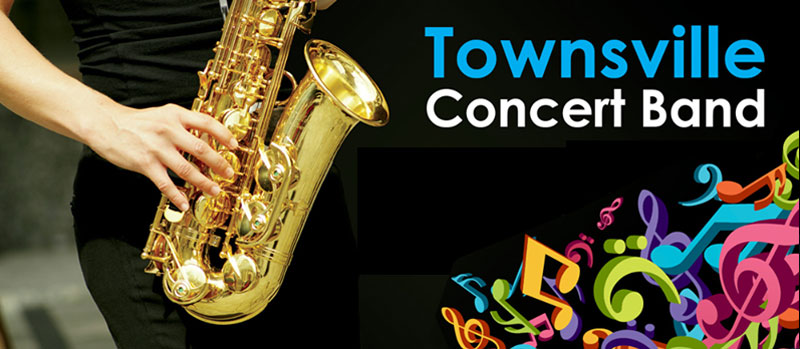
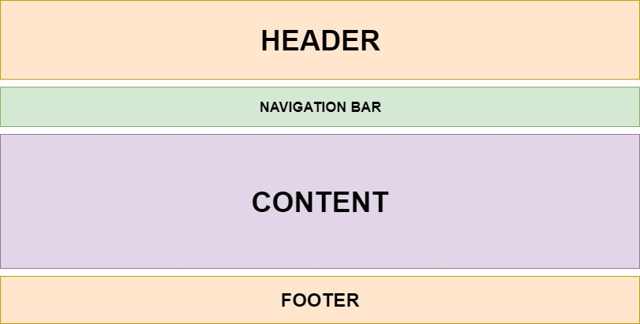
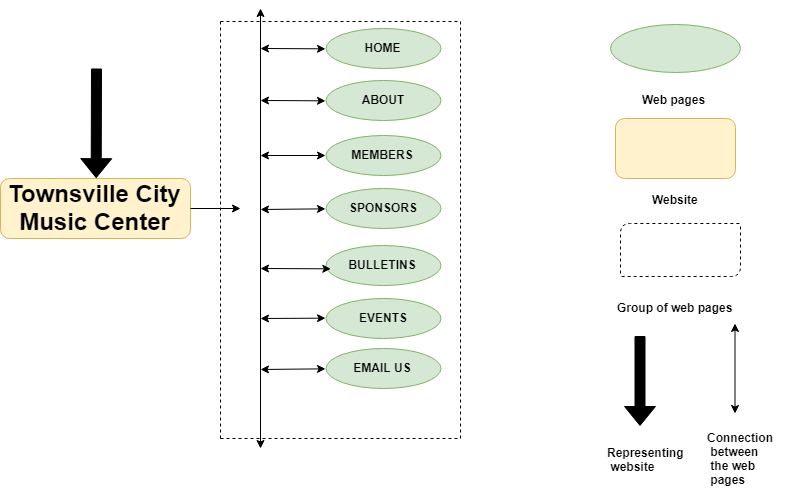

Members:
The main goal of the webiste is to recruit new numbers and increase engagement of members in our activities, e.g. volunteering for adminstration organising and promoting concerts and workshops. The webiste also aims to increase ticket sales, especially to the general public. It also encourage performances to let us organise a concert for them and to cooperate with promotion, photo shoots, media releases, etc.
The registration form in the website helps to calculate the number of users registered.It will also increase the interactions of members in our activities like organising the concerts and workshops, etc.
We "specialise in diversity" i.e. we provide performance opportunities for a very wide range of styles and genres which would otherwise have little exposure, therefore our target audience includes a wide range of ages and tastes. The typical audience may include people with specialised tastes, e.g. classical, jazz, ethnic music, etc. If children are involved, then parents and family members predominate. Every concert, therefore, needs a distinctive theme.
The content in each web page is different. The content shows the purpose of the website. In the main webpage such as home page, it tells us about the website and give some basic information of the website.
The below image shows the layout of the website.
The flowchart represents the plan of the website.
providing comps and images related to web pages
provide a link here to your developed pages
Home Page